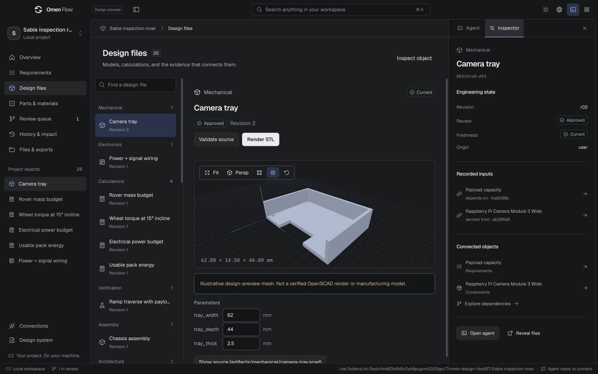
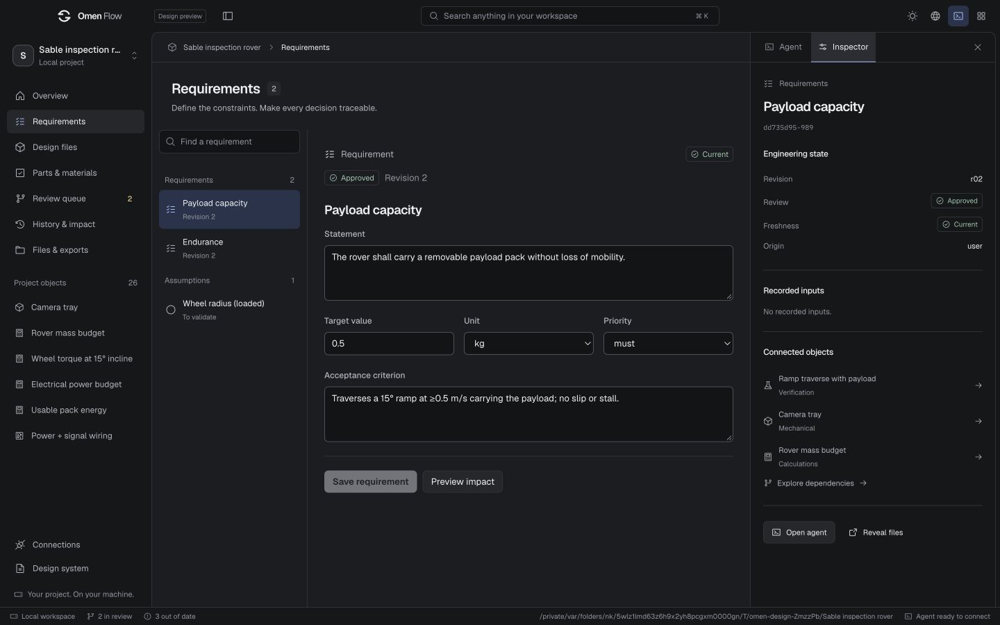
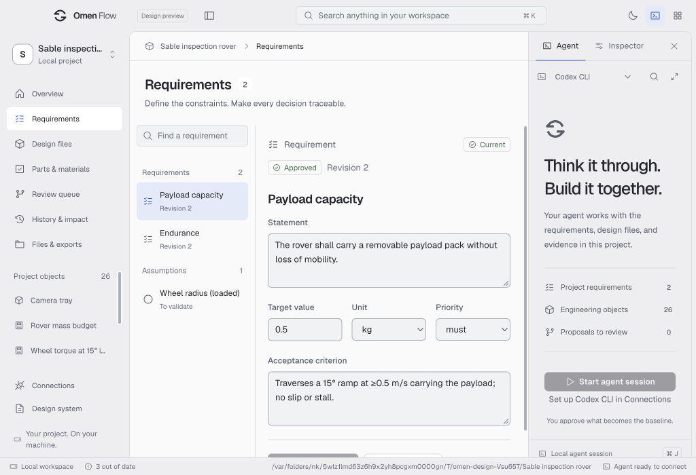
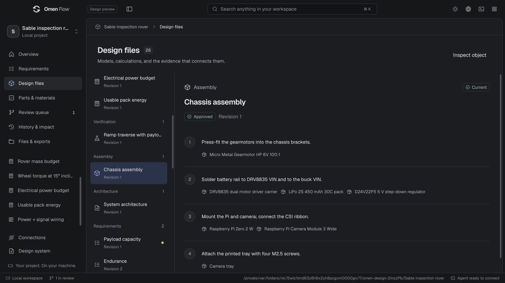
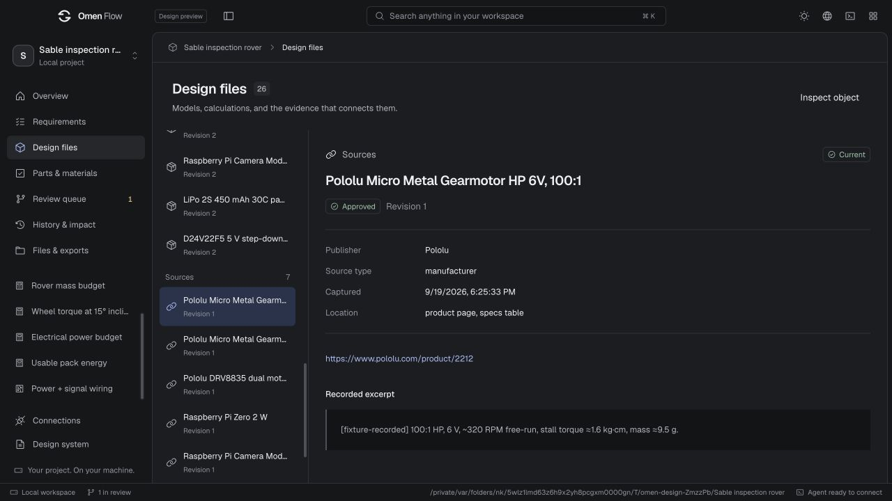

Your AI, your engineering, and the evidence behind every decision. One continuous
workspace for building what comes next.
A complete visual system across project entry, the engineering workbench, object detail,
human review, delivery, and configuration. Built into the actual desktop renderer.
A shared object browser and inspector support models, calculations, wiring, software,
assembly, sources, and tests. Each discipline keeps the controls and evidence it needs.

The tray is illustrative preview geometry, not a verified CAD render or manufacturing
model.
Requirements and the minimum desktop window

Requirements · Dark theme

Minimum desktop size · Light theme
↳
The details share the same standard.
Readable build sequences, explicit evidence, and clear draft boundaries extend the system
below the main workspace.

Assembly sequence

Provenance
Wiring, verification, assumptions, and an empty project